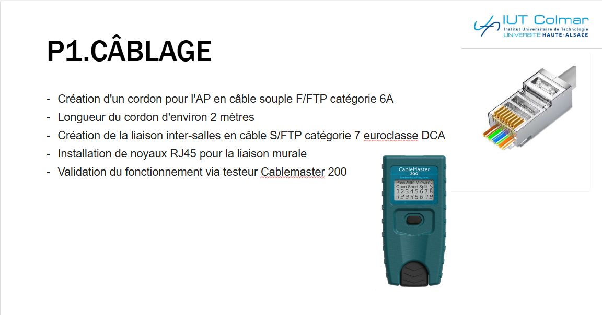
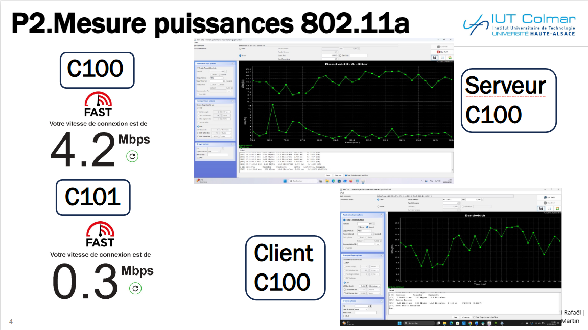
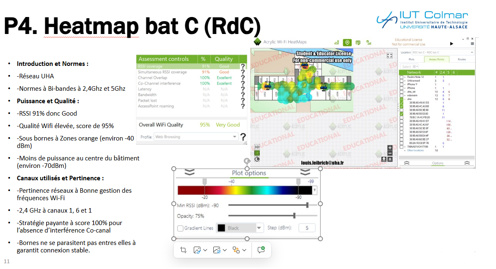
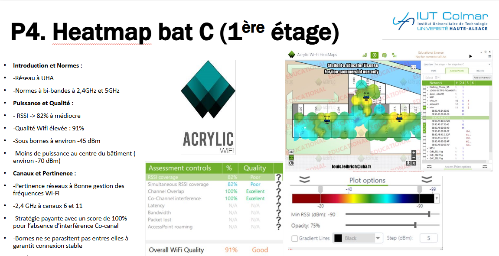

Dispositif de transmission Wi-Fi
Projet d'infrastructure complet, du câblage cuivre physique jusqu'à l'audit de couverture radio.
Contexte & objectifs
Ce projet couvrait toute la chaîne d'un déploiement réseau, de la mise en place de l'infrastructure physique jusqu'à l'optimisation de la couverture radio. À partir du matériel fourni, notre première mission a consisté à réaliser le câblage cuivre et à raccorder les équipements actifs dans les règles de l'art.
La seconde phase du projet était axée sur l'audit et l'analyse. Nous avons effectué des séries de mesures sur site pour comprendre concrètement le comportement des ondes Wi-Fi dans un environnement réel. Cela impliquait d'étudier la différence de propagation et de portée entre les bandes 2,4 GHz et 5 GHz, tout en analysant l'impact direct des obstacles physiques (murs, portes, mobilier) sur l'atténuation du signal.
Enfin, l'objectif final était de synthétiser ces relevés (heatmaps) pour formuler un diagnostic précis et proposer des solutions concrètes d'amélioration (ajustement des canaux, repositionnement stratégique des bornes) afin de garantir des performances optimales aux utilisateurs.
Déroulement & méthodologie
- Câblage physique en catégorie 6A (sertissage, brassage en baie).
- Configuration des commutateurs Cisco.
- Mise en service des points d'accès Wi-Fi.
- Audit de couverture : mesure du signal et cartographie.
- Analyse des résultats et préconisations d'amélioration.
Illustrations




Technologies
- Câblage Cat 6A
- Cisco
- Points d'accès Wi-Fi
- Audit radio
- Switching
Compétences mobilisées
Mesure et analyse des signaux radio lors de l'audit de couverture Wi-Fi.
Déploiement de supports de transmission : câblage cuivre Cat 6A.
Configuration des fonctions de base du réseau local sur les commutateurs.
Retour d'expérience
Ce projet a été une expérience particulièrement enrichissante. J'ai beaucoup apprécié de ne pas me limiter à la simple exécution technique du câblage, mais de pouvoir comprendre concrètement le fonctionnement invisible du réseau à travers l'étude des ondes radio. Voir l'impact immédiat d'un mur ou d'un obstacle sur les graphiques de signal donne une dimension très concrète aux notions théoriques vues en cours.